[ 媒体 / ChatGPT ]
ChatGPT広告
OpenAI が ChatGPT の中で出している広告の地図。何が公式に言えて何が言えないかの要約は `61_いま言えること言えないこと.md` を先に読む
16メモ
398,443字
—仕様の規則
図
図で見る
先に 4 媒体を比べる図、続けて ChatGPT の仕組みの図 33 枚です。押すと、その図が載っている節へ行きます。
4 媒体で比べる
 X01広告を出す引き金
X01広告を出す引き金 X02「学習」の意味の違い
X02「学習」の意味の違い X03予算の上振れの比べ方: Google・Meta・LINEヤフー・ChatGPT
X03予算の上振れの比べ方: Google・Meta・LINEヤフー・ChatGPT X04計測の部品の対応: Google・Meta・LINEヤフー・ChatGPT
X04計測の部品の対応: Google・Meta・LINEヤフー・ChatGPT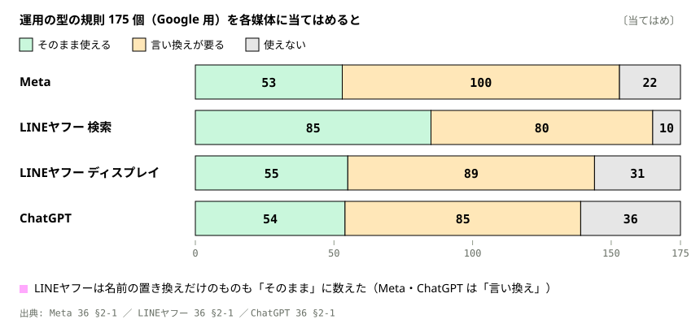
X05運用の型の当てはめの比較: Meta・LINEヤフー・ChatGPT X06審査の比べ方: Google・Meta・LINEヤフー・ChatGPT
X06審査の比べ方: Google・Meta・LINEヤフー・ChatGPT X07広告文はどこで切れるか: Google・LINEヤフー・Meta・ChatGPT
X07広告文はどこで切れるか: Google・LINEヤフー・Meta・ChatGPTChatGPT の仕組み
 C01広告が出る場所広告は回答の下に「スポンサー」と分けて 1 つ出て、回答には影響しない（OpenAI の説明）。
C01広告が出る場所広告は回答の下に「スポンサー」と分けて 1 つ出て、回答には影響しない（OpenAI の説明）。 C02誰に広告が出るか広告が出うるのは、ログインした 18 歳以上の無料版・Go の利用者で、一時チャットと敏感な話題（個人の健康・心の健康・政治・子どもの安全など）の会話を除いたとき。
C02誰に広告が出るか広告が出うるのは、ログインした 18 歳以上の無料版・Go の利用者で、一時チャットと敏感な話題（個人の健康・心の健康・政治・子どもの安全など）の会話を除いたとき。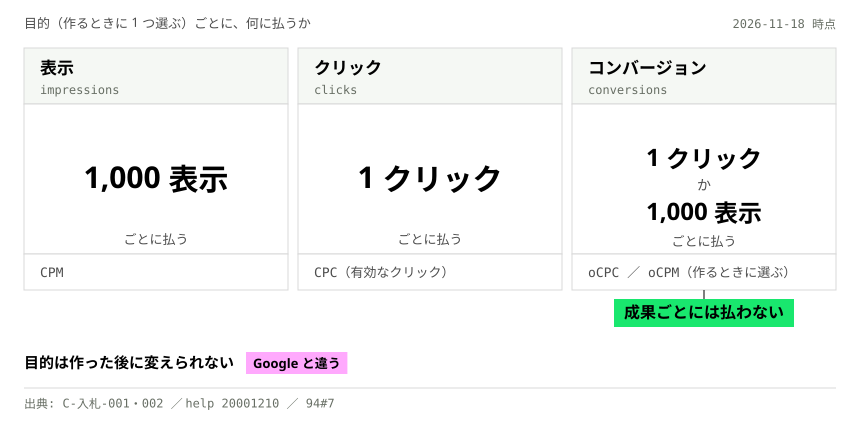
C03目的と課金コンバージョン目的でも払うのはクリック（oCPC）か 1,000 表示（oCPM）で、成果ごとには払わず、oCPM は表示からの成果にも最適化する。 C04入札の移行の年表2026-11-09 から新規は目標 CPA／目標 CPC になり、上限入札（画面では「手動入札」）は 2027-01-01 に廃止、API の旧欄は 11-18 から値が「平均の目標」として扱われる。
C04入札の移行の年表2026-11-09 から新規は目標 CPA／目標 CPC になり、上限入札（画面では「手動入札」）は 2027-01-01 に廃止、API の旧欄は 11-18 から値が「平均の目標」として扱われる。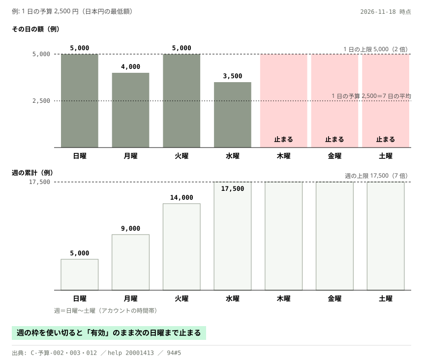
C05予算の 7 日平均1 日の予算は 7 日（日曜〜土曜、アカウントの時間帯）の平均で、1 日は 2 倍・週は 7 倍まで使われ、週の枠を使い切ると「有効」のまま次の日曜まで止まる。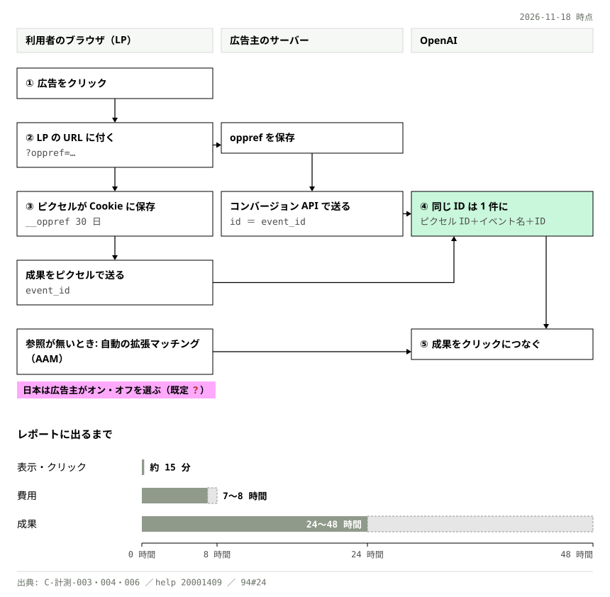
C06計測の流れクリックで LP に付く oppref をピクセルが Cookie に保存して成果とつなぎ、サーバーから送るなら LP で oppref を保存してコンバージョン API に入れ、イベント ID をピクセルとそろえて二重計上を防ぐ。 C07ビュースルーの窓同じ成果でも表示後の窓が 1 日（既定）だとビュースルーが「コンバージョン」に入り、成果は多く CPA は安く見えるが、最適化・入札・課金は変わらない。
C07ビュースルーの窓同じ成果でも表示後の窓が 1 日（既定）だとビュースルーが「コンバージョン」に入り、成果は多く CPA は安く見えるが、最適化・入札・課金は変わらない。 C08日本で出せる業種日本は「米国外」の扱いで、ヘルスケアと金融で出せるのは健康・金融のソフトウェアだけ、預金・カード・保険・ローン・投資は選ばれた広告主だけで、申請を受け付けていない区分もある。
C08日本で出せる業種日本は「米国外」の扱いで、ヘルスケアと金融で出せるのは健康・金融のソフトウェアだけ、預金・カード・保険・ローン・投資は選ばれた広告主だけで、申請を受け付けていない区分もある。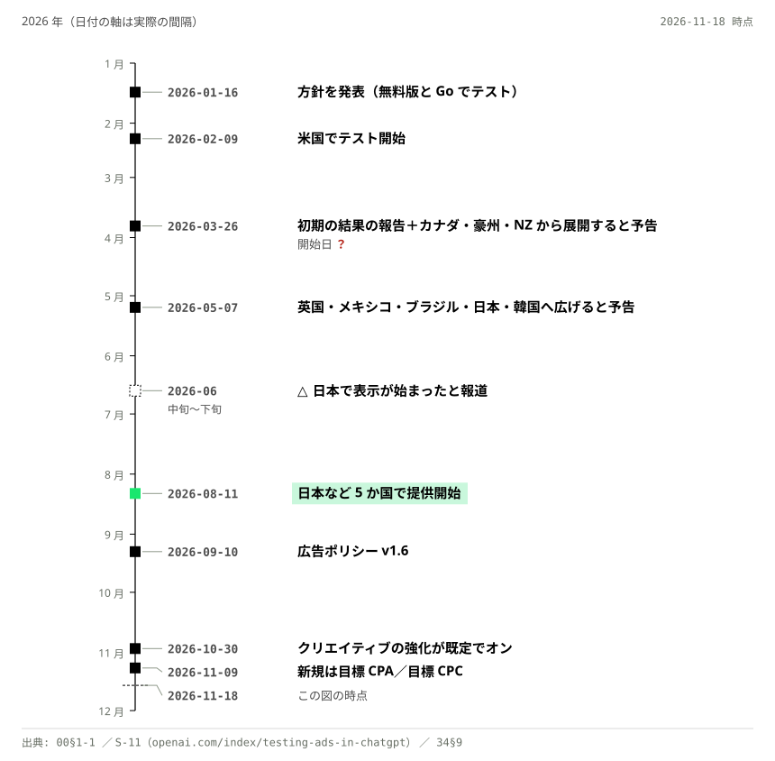
C092026 年の年表ChatGPT の広告は 2026-02 に米国で始まり、03-26 にカナダ・豪州・NZ からの展開を予告し（開始日は公式に記載なし）、日本では 08-11 に提供が始まった。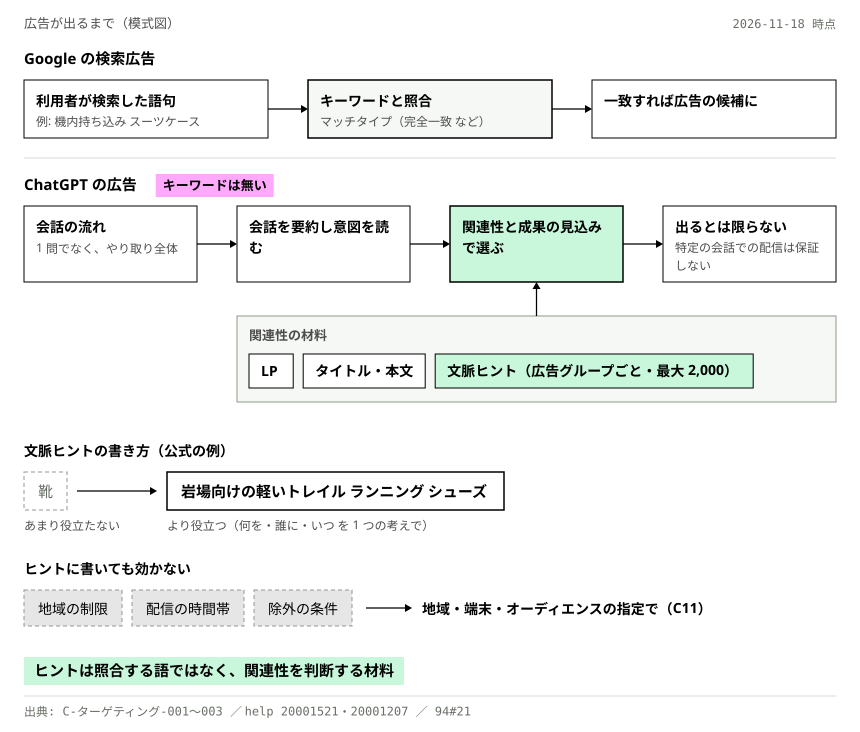
C10文脈ヒントとキーワードの違いGoogle のキーワードは検索語句と照合して出す指定だが、ChatGPT の文脈ヒントは広告グループごとに足す関連性の材料で、完全一致のキーワードではなく、特定の会話での配信を保証しない。 C11ターゲティングの範囲広告主が絞れるのは国・地域（日本は都道府県と郵便番号）・端末 5 種・カスタム オーディエンス（含めるは照合後 25,000 人以上、除くは下限なし、EEA・スイスは不可）で、会話を除く Negative Phrases は資格のある一部の広告主だけ。
C11ターゲティングの範囲広告主が絞れるのは国・地域（日本は都道府県と郵便番号）・端末 5 種・カスタム オーディエンス（含めるは照合後 25,000 人以上、除くは下限なし、EEA・スイスは不可）で、会話を除く Negative Phrases は資格のある一部の広告主だけ。 C12効果測定で今できること帰属（ピクセル・コンバージョン API と外部の帰属の会社）は今使えるが、増分は OpenAI 自身が「まだ初期段階」として Haus・Measured・WorkMagic と地域の実験を検討中で、ブランドの測定は Kantar・Cint との初期のテスト（2026-10-05 の発表）。
C12効果測定で今できること帰属（ピクセル・コンバージョン API と外部の帰属の会社）は今使えるが、増分は OpenAI 自身が「まだ初期段階」として Haus・Measured・WorkMagic と地域の実験を検討中で、ブランドの測定は Kantar・Cint との初期のテスト（2026-10-05 の発表）。 C13審査の 3 層審査は広告主（事業者の確認は最大 7 営業日）、クリエイティブと LP（どれか 1 つでも反すれば却下、OAI-AdsBot が LP を読めなければ配信されない）、掲載（承認された広告も敏感な会話には出ない）の 3 層で、1 つ通っても他が済んだことにはならない。
C13審査の 3 層審査は広告主（事業者の確認は最大 7 営業日）、クリエイティブと LP（どれか 1 つでも反すれば却下、OAI-AdsBot が LP を読めなければ配信されない）、掲載（承認された広告も敏感な会話には出ない）の 3 層で、1 つ通っても他が済んだことにはならない。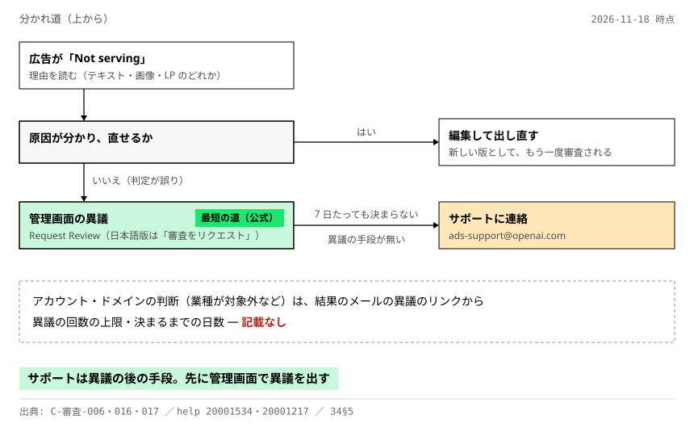
C14却下されたとき却下は理由を読んで直せるなら編集して出し直し（新しい版として再審査）、判定が誤りなら管理画面の異議（Request Review）が最短で、サポート（ads-support@openai.com）は 7 日たっても決まらないか異議の手段が無いときだけ。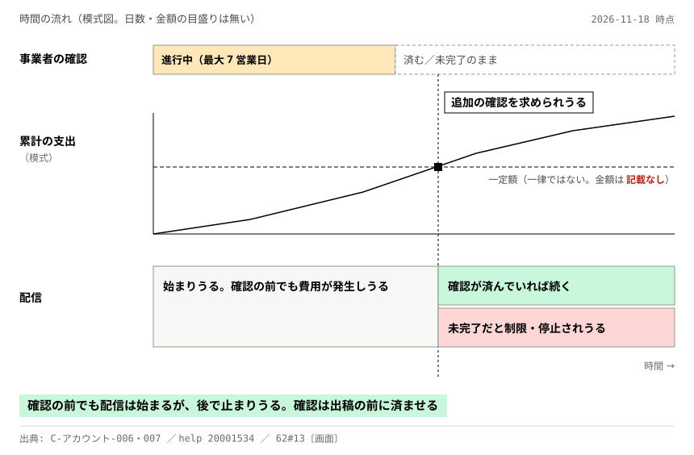
C15事業者の確認と配信事業者の確認（最大 7 営業日）が済む前でも配信は始まり費用が発生しうるが、支出が一定額（一律ではなく、予算や支払いの閾値とは別）に達すると追加の確認を求められ、未完了なら配信が制限・停止されうる。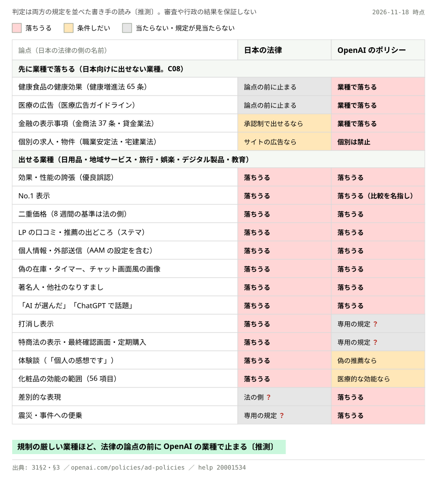
C16日本の法律と OpenAI のポリシーのどちらで落ちるか日本で規制の厳しい健康・医療・金融・個別の求人や物件は、法律の論点に入る前に OpenAI の業種の段階で止まり、出せる業種では景表法の優良誤認・No.1・二重価格が OpenAI の「誤解を招く広告」と重なって両方で落ちうる〔推測〕。 C17いま言えること・報道だけ・分からないこと2026-11-18 時点で公式に言えることは 28 件、報道だけで公式に確かめられないことは 8 件、分からないことは 13 件（うち 5 件はその日のうちに解決）。
C17いま言えること・報道だけ・分からないこと2026-11-18 時点で公式に言えることは 28 件、報道だけで公式に確かめられないことは 8 件、分からないことは 13 件（うち 5 件はその日のうちに解決）。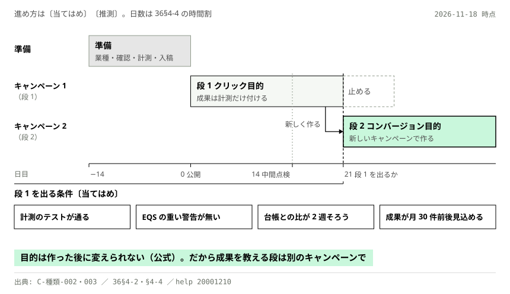
C18小さく試す立ち上げの 2 段〔当てはめ〕目的・最適化のイベント・課金方法は作った後に変えられない（公式）ので、運用の型の「手前の成果で始めて本来の成果へ移る」は、クリック目的で始めて計測（ピクセル・コンバージョン API・EQS）が安定してからコンバージョン目的を新しいキャンペーンで作る 2 段になる〔当てはめ〕。 C19運用の型の当てはめ運用の型の規則 175 個のうち ChatGPT でそのまま使えるのは 54、言い換えが要るのは 85、使えないのは 36 で（区分は〔当てはめ〕）、Meta（53／100／22）より使えないものが多い。
C19運用の型の当てはめ運用の型の規則 175 個のうち ChatGPT でそのまま使えるのは 54、言い換えが要るのは 85、使えないのは 36 で（区分は〔当てはめ〕）、Meta（53／100／22）より使えないものが多い。 C20ChatGPT の広告の全体の地図ChatGPT の広告は、業種と国の門（日本は米国外の扱い）を通ったあと、広告主が LP・文・文脈ヒントを渡し、システムが会話の文脈で選び、回答の下の別枠に 1 つ出して、計測で学習に戻る流れで、その上に「変化が速い」が重なる。
C20ChatGPT の広告の全体の地図ChatGPT の広告は、業種と国の門（日本は米国外の扱い）を通ったあと、広告主が LP・文・文脈ヒントを渡し、システムが会話の文脈で選び、回答の下の別枠に 1 つ出して、計測で学習に戻る流れで、その上に「変化が速い」が重なる。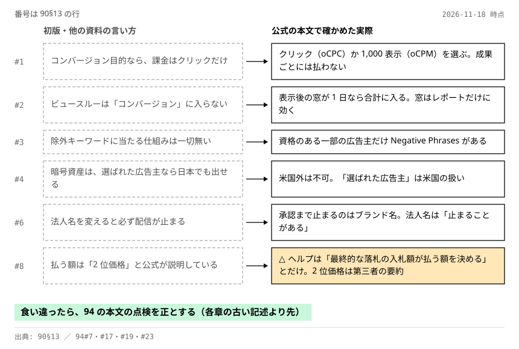
C21裏取りで覆った主張課金・ビュースルー・除外・暗号資産・法人名・払う額の 6 点は、検索結果の抜粋や報道から書いた初版の言い方が、公式の本文で覆ったか言い過ぎだった（払う額は △ のまま）。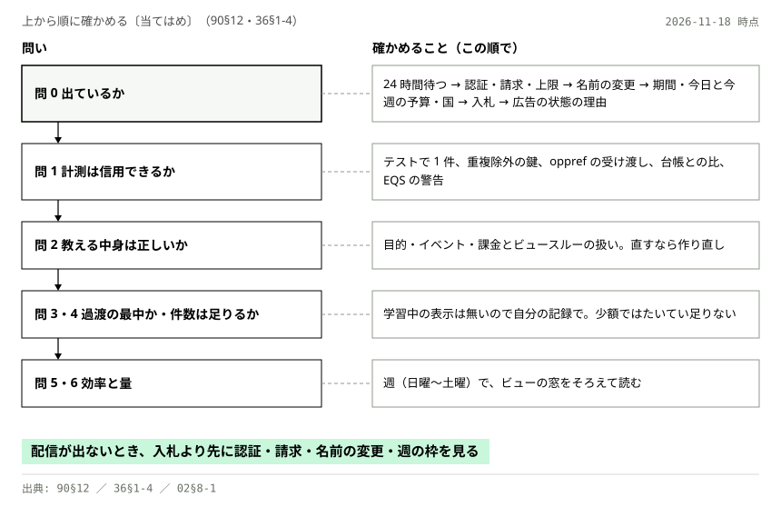
C22判断の順序ChatGPT の広告は学習中の表示や品質スコアが無いので、出ているか → 計測は信用できるか → 教える中身 → 件数 → 効率と量の順に、自分の記録で確かめる〔当てはめ〕。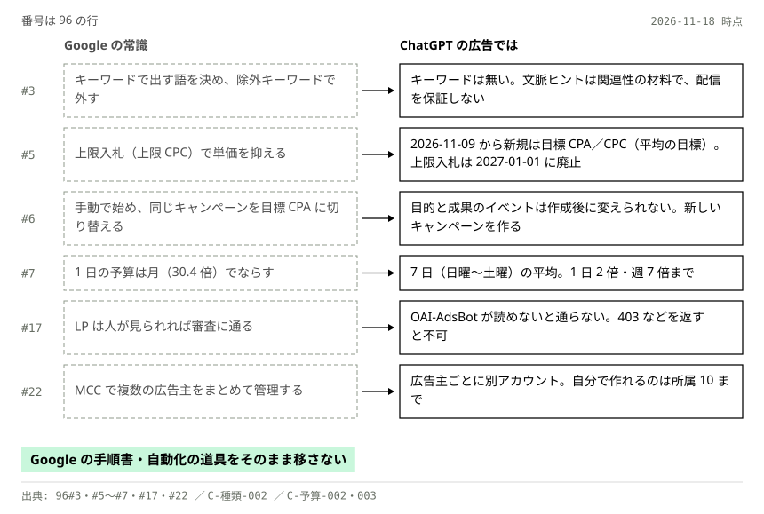
C23Google の常識と ChatGPT の違いキーワード・上限入札・入札戦略の切り替え・月でならす予算・人が見られる LP・MCC の 6 つは、Google では当たり前だが ChatGPT の広告ではそのまま通らない。 C24古い記事の記述といまChatGPT の広告は 2026 年の間に、決済・出ない会話・提供国・自動の書き換え・入札が日付つきで変わったので、半年前の記事は前提が違うことが多い。
C24古い記事の記述といまChatGPT の広告は 2026 年の間に、決済・出ない会話・提供国・自動の書き換え・入札が日付つきで変わったので、半年前の記事は前提が違うことが多い。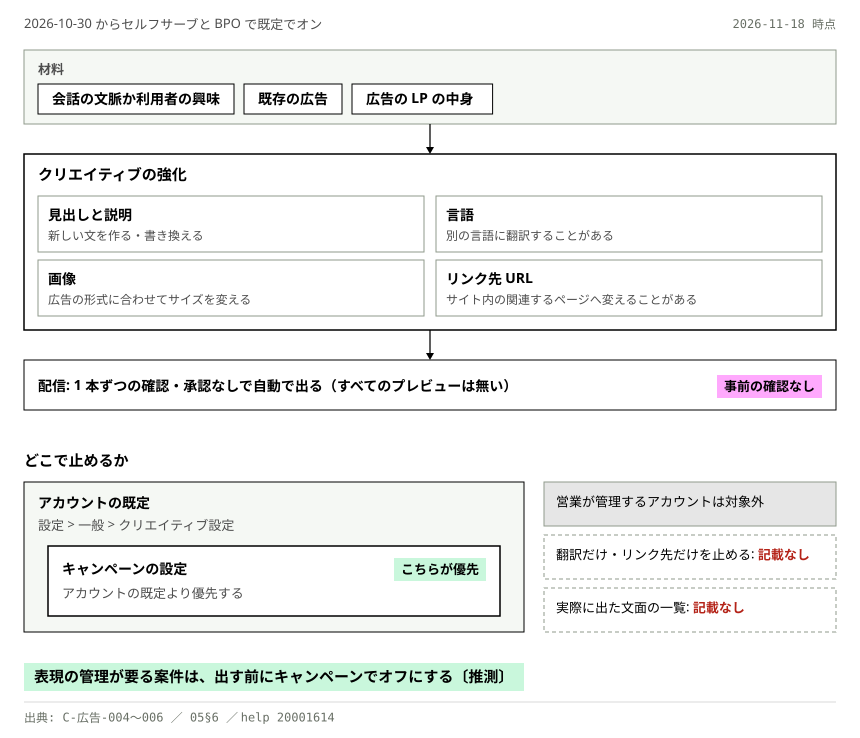
C25クリエイティブの強化の仕組みと止め方クリエイティブの強化は会話・既存の広告・LP を材料に、見出しと説明の書き換え、翻訳、画像のサイズ、リンク先の変更を、1 本ずつの確認なしに配信する（2026-10-30 から既定でオン）。 C263 つの名前と、変えたとき名前は 3 つあり、アカウント名の変更は審査なし、ブランド名の変更は承認まで配信が止まり、法人名の変更は事業者の審査のやり直しで止まることがある。
C263 つの名前と、変えたとき名前は 3 つあり、アカウント名の変更は審査なし、ブランド名の変更は承認まで配信が止まり、法人名の変更は事業者の審査のやり直しで止まることがある。 C27最低の予算で月に何件か最低の 1 日の予算 2,500 円（公式）で月約 76,000 円、CPC 300 円・CVR 2%（どちらも例）なら月 5 件前後で、確定 30 件まで約半年かかる〔計算〕。
C27最低の予算で月に何件か最低の 1 日の予算 2,500 円（公式）で月約 76,000 円、CPC 300 円・CVR 2%（どちらも例）なら月 5 件前後で、確定 30 件まで約半年かかる〔計算〕。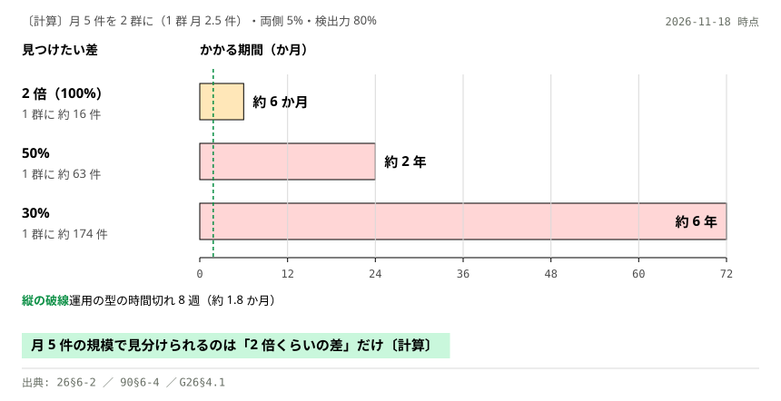
C28差を見分けるのにかかる期間月 5 件の規模では、2 倍の差でも見分けるのに約 6 か月、30% の差なら約 6 年かかり、運用の型の時間切れ 8 週のうちには何も言えない〔計算〕。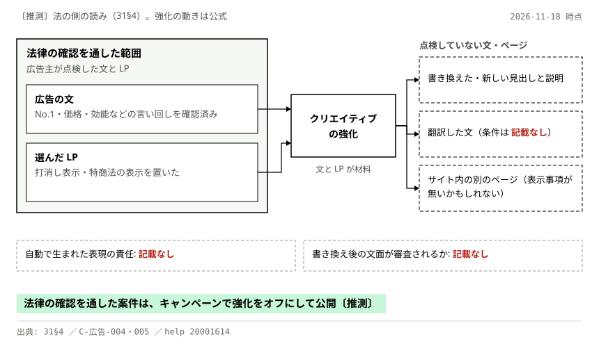
C29強化で法の点検の外に出る道クリエイティブの強化は、法律の確認を通した文と LP を材料に、点検していない見出し・翻訳・リンク先を作りうるので、打消し表示や特商法の表示のある LP 以外へ飛ぶと法の側の点検が崩れうる〔推測〕。 C30日本の運用者が今やれること日本で始めるなら、出稿の前に LP のクローラーの点検（費用ゼロ）と事業者の確認、後で変えられない国・通貨・タイムゾーンと強化の設定を済ませ、出稿はクリック目的と計測から入り、計測が安定してからコンバージョン目的を新しいキャンペーンで作る（順番は〔推測〕）。
C30日本の運用者が今やれること日本で始めるなら、出稿の前に LP のクローラーの点検（費用ゼロ）と事業者の確認、後で変えられない国・通貨・タイムゾーンと強化の設定を済ませ、出稿はクリック目的と計測から入り、計測が安定してからコンバージョン目的を新しいキャンペーンで作る（順番は〔推測〕）。 C31広告が選ばれる 7 段公式の技術ブログでは、会話を広告セッションとして追い、LLM が商業的な意図の問いを作ってから、候補の検索・除外・評価・オークション・最終チェックの順に 1 つへ絞る。
C31広告が選ばれる 7 段公式の技術ブログでは、会話を広告セッションとして追い、LLM が商業的な意図の問いを作ってから、候補の検索・除外・評価・オークション・最終チェックの順に 1 つへ絞る。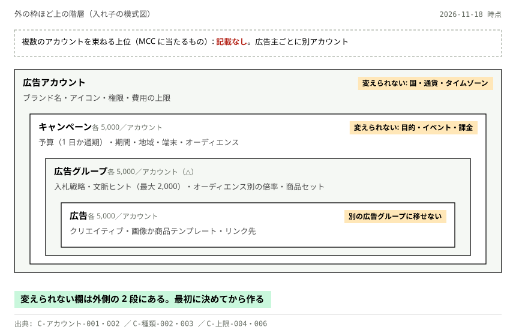
C32アカウントの階層広告アカウント → キャンペーン → 広告グループ → 広告の 4 段で、作成後に変えられないのは外側の 2 段（アカウントの国・通貨・タイムゾーン、キャンペーンの目的・イベント・課金）にあり、変えるなら作り直しになる。 C33イベントの品質スコアの 7 日の窓EQS は完了した 7 暦日のデータで毎日更新するので、設定を直した翌日の点数には直した後のイベントが少ししか入らず、効果は窓が入れ替わる 7 日をかけて少しずつ出る。
C33イベントの品質スコアの 7 日の窓EQS は完了した 7 暦日のデータで毎日更新するので、設定を直した翌日の点数には直した後のイベントが少ししか入らず、効果は窓が入れ替わる 7 日をかけて少しずつ出る。一覧
ChatGPT のメモ
いまある分だけです。知識ベースに足されたら、作り直すとここにも出ます。
00全体像25,172 字02入札と予算27,434 字05広告とクリエイティブ26,400 字06計測とコンバージョン（ピクセル・コンバージョン API・oppref・詳細マッチング・イベントの品質・アトリビューション）46,584 字23ターゲティングと文脈ヒント23,521 字26効果測定の実務（増分・実験・少額での読み方）16,552 字28「運用の型」（2026-11-19 時点。監査・引き継ぎ・立ち上げ・点検・予算・止める判断・繁忙期・目標・報告・変更の記録・文脈ヒントと小さく始める段取り）45,720 字31日本の広告法規と、OpenAI の広告ポリシー（地図メモ）18,276 字34審査落ち（不承認・配信停止）の原因と直し方40,041 字36運用の型の ChatGPT への当てはめ（点検・立ち上げ・監査・判断の差分）39,973 字61いま言えること・言えないこと9,283 字65API とレポートの取り出し（日次の実績を読むだけ）27,869 字90核となる理解（ChatGPT の広告の運用を、仕組みから考えるための 1 本）21,070 字94裏取りの記録8,027 字95出どころ一覧17,451 字96意外な点とよくある誤解5,070 字